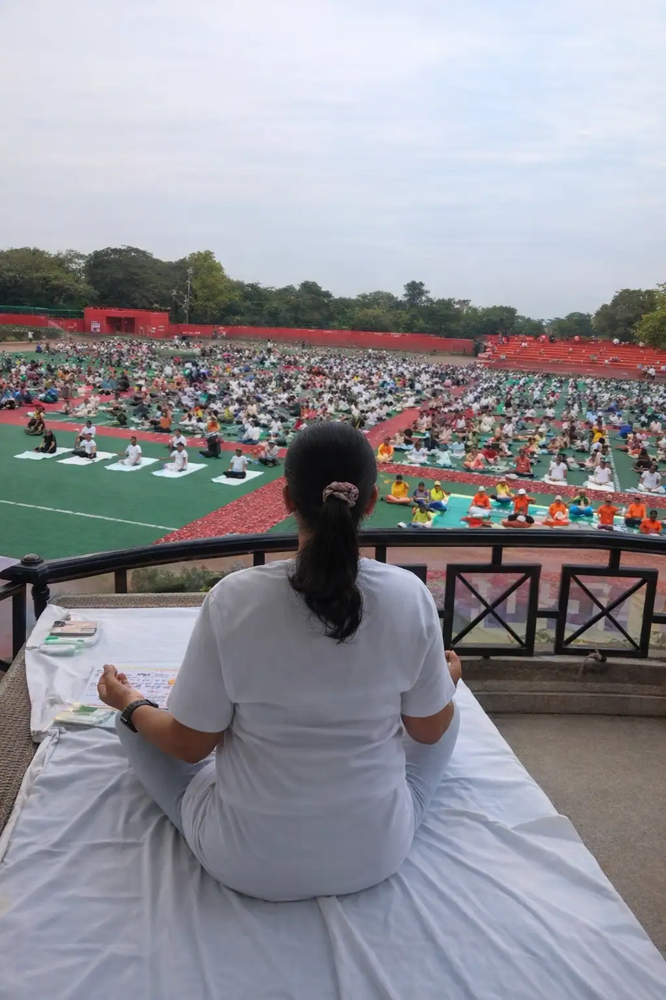

<script type="application/ld+json">
{
  "@context": "https://schema.org",
  "@graph": [
    {
      "@type": "Organization",
      "@id": "https://onlineyogaclass.in/#organization",
      "name": "Shringarika Mishra - Clinical Yoga",
      "url": "https://onlineyogaclass.in",
      "logo": "https://onlineyogaclass.in/images/logo.webp"
    },
    {
      "@type": "Person",
      "@id": "https://onlineyogaclass.in/#shringarika",
      "name": "Shringarika Mishra",
      "jobTitle": "Clinical Yoga Specialist & Research Scholar",
      "image": "https://onlineyogaclass.in/images/shringarika.webp",
      "sameAs": [
        "https://scholar.google.com/citations?user=FAp2CnkAAAAJ",
        "https://www.researchgate.net/profile/Shringarika-Mishra",
        "https://in.linkedin.com/in/shringarika-mishra-400607224"
      ]
    },
    {
      "@type": "BlogPosting",
      "@id": "https://onlineyogaclass.in/blogs/biological-restoration-the-10-minute-sofa-protocol-for-acute-menstrual-lethargy.html#article",
      "isPartOf": {
        "@id": "https://onlineyogaclass.in/blogs/biological-restoration-the-10-minute-sofa-protocol-for-acute-menstrual-lethargy.html"
      },
      "headline": "Biological Restoration: The 10-Minute \"Sofa Protocol\" for Acute Menstrual Lethargy",
      "description": "The physiological phenomenon of "zero energy" during the menstrual phase is frequently misunderstood as simple tiredness. From a clinical perspective at BHU, this lethargy is rooted in the systemic drop of estrogen and progesterone, coupled with localized prostaglandin release. This hormonal shift often leads to pelvic congestion and HPA-axis sensitivity. When the biological cost of standing feels too high, the 10-minute Sofa Yoga protocol serves as a Neuro-Endocrine reset, focusing on vascular redirection without cardiovascular tax.",
      "image": "https://onlineyogaclass.in/images/stress.webp",
      "author": {
        "@id": "https://onlineyogaclass.in/#shringarika"
      },
      "publisher": {
        "@id": "https://onlineyogaclass.in/#organization"
      },
      "mainEntityOfPage": "https://onlineyogaclass.in/blogs/biological-restoration-the-10-minute-sofa-protocol-for-acute-menstrual-lethargy.html"
    },
    {
      "@type": "BreadcrumbList",
      "@id": "https://onlineyogaclass.in/blogs/biological-restoration-the-10-minute-sofa-protocol-for-acute-menstrual-lethargy.html#breadcrumb",
      "itemListElement": [
        {
          "@type": "ListItem",
          "position": 1,
          "name": "Home",
          "item": "https://onlineyogaclass.in/"
        },
        {
          "@type": "ListItem",
          "position": 2,
          "name": "Clinical Blogs",
          "item": "https://onlineyogaclass.in/blogs.html"
        },
        {
          "@type": "ListItem",
          "position": 3,
          "name": "Biological Restoration: The 10-Minute \"Sofa Protocol\" for Acute Menstrual Lethargy",
          "item": "https://onlineyogaclass.in/blogs/biological-restoration-the-10-minute-sofa-protocol-for-acute-menstrual-lethargy.html"
        }
      ]
    }
  ]
}
</script>

<main class="relative z-10 max-w-5xl mx-auto px-4 sm:px-6 lg:px-8 pt-32 pb-24">
    <div class="mb-10 max-w-3xl mx-auto rounded-[2.5rem] overflow-hidden bg-slate-50 border border-pink-50 shadow-md">
        
    </div>

    <div class="article-card bg-white border border-gray-100 rounded-[2.5rem] p-8 md:p-12 shadow-sm transition">
        <script type="application/ld+json">
    {
      "@context": "https://schema.org",
      "@type": "BlogPosting",
      "headline": "The 10-Minute Sofa Yoga Routine for Days You Have Zero Period Energy",
      "description": "A clinical guide to managing menstrual fatigue and pelvic congestion through low-impact yoga protocols designed for zero-energy days.",
      "keywords": "Clinical Yoga in Varanasi, BHU Yoga Specialist, yoga for period cramps, menstrual fatigue yoga, Shringarika Mishra Research, pelvic blood flow yoga",
      "author": {
        "@type": "Person",
        "name": "Shringarika Mishra"
      }
    }
    </script>

    <span class="text-pink-600 font-bold text-xs uppercase tracking-widest">Menstrual Health &amp; Clinical Biomechanics</span>
    <h2 class="text-3xl md:text-4xl font-bold mt-2 mb-6">Biological Restoration: The 10-Minute "Sofa Protocol" for Acute Menstrual Lethargy</h2>
    
    <div class="flex flex-col md:flex-row gap-8 mb-8">
        <div class="md:w-1/3">
            
        </div>
        <div class="md:w-2/3">
            <p class="text-gray-600 text-lg leading-relaxed">
                The physiological phenomenon of "zero energy" during the menstrual phase is frequently misunderstood as simple tiredness. From a clinical perspective at <strong>BHU</strong>, this lethargy is rooted in the systemic drop of estrogen and progesterone, coupled with localized <strong>prostaglandin</strong> release. This hormonal shift often leads to pelvic congestion and HPA-axis sensitivity. When the biological cost of standing feels too high, the 10-minute Sofa Yoga protocol serves as a <strong>Neuro-Endocrine reset</strong>, focusing on vascular redirection without cardiovascular tax.
            </p>
        </div>
    </div>
    
    <div class="full-content text-gray-700 space-y-8 leading-relaxed border-t border-gray-50 pt-8">
        
        <section>
            <h3 class="text-2xl font-bold text-gray-900 mb-3">The Pathophysiology of Menstrual Exhaustion</h3>
            <p>
                During the early follicular phase, the body undergoes a significant inflammatory response to initiate the shedding of the endometrium. This process utilizes substantial metabolic resources, often leaving the individual with limited ATP availability for high-impact activity. Furthermore, <strong>Pelvic Hemodynamics</strong> are altered; blood tends to pool in the reproductive tract, creating a sensation of heaviness and dull lower back pain.
            </p>
            <p>
                Conventional exercise during these "zero energy" days can often trigger a rebound cortisol spike, which paradoxically increases the perception of pain and fatigue. As a <strong>BHU Yoga Specialist</strong>, my focus is on using the sofa as a clinical prop to achieve mechanical advantage. By utilizing supported inversions and lateral expansions, we can assist the lymphatic system and encourage venous return, effectively "re-oxygenating" the brain and limbs while remaining in a state of physical repose.
            </p>
        </section>

        <section>
            <h3 class="text-2xl font-bold text-gray-900 mb-3">The 10-Minute "Sofa" Clinical Sequence</h3>
            <p>This protocol is designed to be performed entirely on a supportive sofa, emphasizing <strong>Vagal Tone stimulation</strong> and myofascial release.</p>
            
            <div class="space-y-6 mt-6">
                <div class="border border-pink-100 p-6 rounded-2xl bg-white shadow-sm">
                    <h4 class="font-bold text-gray-900 mb-2">1. Supported Supta Baddha Konasana (3 Mins)</h4>
                    <p class="text-sm">Rest your back against the sofa cushions with your feet on the sofa, knees falling open. This posture targets the <strong>Internal Iliac Arteries</strong>. By opening the pelvic bowl without muscle engagement, we reduce the intra-abdominal pressure that contributes to dysmenorrhea. This allows for increased oxygenation to the uterine wall, which can help in the efficient clearance of prostaglandin buildup.</p>
                </div>

                <div class="border border-pink-100 p-6 rounded-2xl bg-white shadow-sm">
                    <h4 class="font-bold text-gray-900 mb-2">2. Lateral Costal Expansion (2 Mins)</h4>
                    <p class="text-sm">Sitting sideways on the sofa, use the armrest to support a gentle side bend. In many women, period fatigue is compounded by "thoracic guarding"—shallow breathing due to abdominal discomfort. Expanding the intercostal muscles improves <strong>tidal volume</strong> and signals the nervous system to move from Sympathetic dominance into Parasympathetic recovery.</p>
                </div>

                <div class="border border-pink-100 p-6 rounded-2xl bg-white shadow-sm">
                    <h4 class="font-bold text-gray-900 mb-2">3. Modified Viparita Karani (5 Mins)</h4>
                    <p class="text-sm">Lie on the floor with your legs resting up the front of the sofa. This is the ultimate clinical remedy for period-induced "limb heaviness." Gravity assists the <strong>venous return</strong> from the lower extremities, reducing the workload on the heart. This inversion also stimulates the baroreceptors, which helps in managing the slight blood pressure fluctuations that contribute to "period brain fog."</p>
                </div>
            </div>
        </section>

        <section>
            <h3 class="text-2xl font-bold text-gray-900 mb-3">Vagal Tone and Pain Modulation</h3>
            <p>
                The <strong>Vagus Nerve</strong> acts as a biological brake. During your period, the nervous system is often "on edge" due to systemic inflammation. By utilizing the 10-minute protocol, we focus on <strong>Lunar Breathing (Chandra Bhedana)</strong> while in these supported shapes. This specifically targets the Parasympathetic nervous system, releasing anti-inflammatory cytokines that can naturally lower the perception of cramp intensity.
            </p>
            <p>
                In Varanasi, at our clinical batches, we emphasize that "Yoga is not about the shape of the body, but the shape of the internal environment." On days when energy is low, the priority is <strong>Restorative Endocrinology</strong>—giving your glands the space to recalibrate without adding the stress of a formal workout.
            </p>
        </section>

        <section>
            <h3 class="text-2xl font-bold text-gray-900 mb-3">Integrating Ayurvedic Wisdom for Fatigue</h3>
            <p>
                To support this 10-minute routine, Ayurveda suggests managing the <strong>Apana Vayu</strong>—the downward-moving energy. We recommend sipping warm infusion of ginger and fennel during the menstrual phase. These "bitter" and "pungent" elements assist the Jatharagni (metabolic fire) which often dampens during the period, contributing to that feeling of zero energy.
            </p>
        </section>

        <div class="border-t border-gray-100 pt-8 mt-8">
            <div class="bg-gray-900 text-white p-8 rounded-[2rem] shadow-2xl relative overflow-hidden">
                <div class="flex flex-col md:flex-row items-center gap-8 relative z-10">
                    
                    <div>
                        <h4 class="text-2xl font-bold mb-2">About Shringarika Mishra</h4>
                        <p class="text-sm text-gray-300 leading-relaxed">
                            Gold Medalist (University of Patanjali) &amp; NET JRF (AIR 2). Research Scholar at <strong>Banaras Hindu University (BHU)</strong> specializing in Clinical Yoga for PCOS and Infertility. With 11+ years of experience and 16 published research papers, she provides evidence-based recovery for global and local patients.
                        </p>
                        <div class="flex gap-4 mt-4">
                            <a href="https://www.researchgate.net/profile/Shringarika-Mishra" target="_blank" class="text-xs text-blue-400 font-bold hover:underline"><i class="fab fa-researchgate mr-1"></i> ResearchGate Profile</a>
                            <a href="https://scholar.google.com/citations?user=FAp2CnkAAAAJ&amp;hl=en" target="_blank" class="text-xs text-red-400 font-bold hover:underline"><i class="fab fa-google mr-1"></i> Google Scholar</a>
                        </div>
                    </div>
                </div>
                
                <div class="mt-10 flex flex-col md:flex-row justify-center gap-4">
                    <a href="../../programs/#pcos" class="bg-pink-600 text-white px-10 py-4 rounded-full font-bold hover:bg-pink-700 transition shadow-lg text-center text-lg">
                        Join the PCOS &amp; Hormonal Balance Program
                    </a>
                    <a href="https://wa.me/919559827280" class="border-2 border-green-500 text-green-500 px-10 py-4 rounded-full font-bold hover:bg-green-50 transition text-center text-lg">
                        <i class="fab fa-whatsapp mr-2"></i> Free Clinical Consultation
                    </a>
                </div>
            </div>
        </div>

        <p class="text-[10px] text-gray-400 mt-12 text-center leading-relaxed italic">
            <strong>Medical Disclaimer:</strong> The clinical data and protocols provided in this article are for educational purposes based on research conducted at BHU. This information is not a substitute for professional medical advice, diagnosis, or treatment. Always consult with your gynecologist before starting a new yoga protocol, especially when managing chronic endocrine or reproductive conditions.
        </p>
    </div>
        
        
                    <div class="mt-12 pt-8 border-t border-slate-100 text-left">
                        <h4 class="text-xl font-black text-slate-900 tracking-tight mb-4 flex items-center gap-2">
                            <span class="w-1 h-6 bg-pink-500 rounded-full"></span> Read More Clinical Insights
                        </h4>
                        <ul class="space-y-3 font-semibold text-pink-600 text-sm md:text-base">
                            <li>
                                <a href="hormonal-synchronization-a-clinical-analysis-of-seed-cycling-and-yoga-for-menstrual-homeostasis.html" class="hover:text-pink-700 hover:underline transition flex items-center gap-2">
                                    <i class="fas fa-book-open text-xs text-pink-400"></i> Hormonal Synchronization: A Clinical Analysis of Seed Cycling and Yoga for Menstrual Homeostasis
                                </a>
                            </li>
                            <li>
                                <a href="the-pcos-weight-loss-paradox-decoding-the-neuro-endocrine-barriers-to-fat-loss.html" class="hover:text-pink-700 hover:underline transition flex items-center gap-2">
                                    <i class="fas fa-book-open text-xs text-pink-400"></i> The PCOS Weight Loss Paradox: Decoding the Neuro-Endocrine Barriers to Fat Loss
                                </a>
                            </li>
                        </ul>
                    </div>
    </div>
</main>
